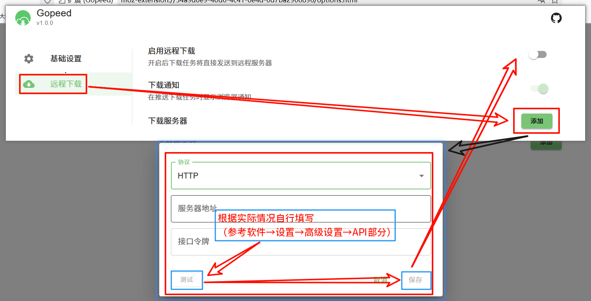
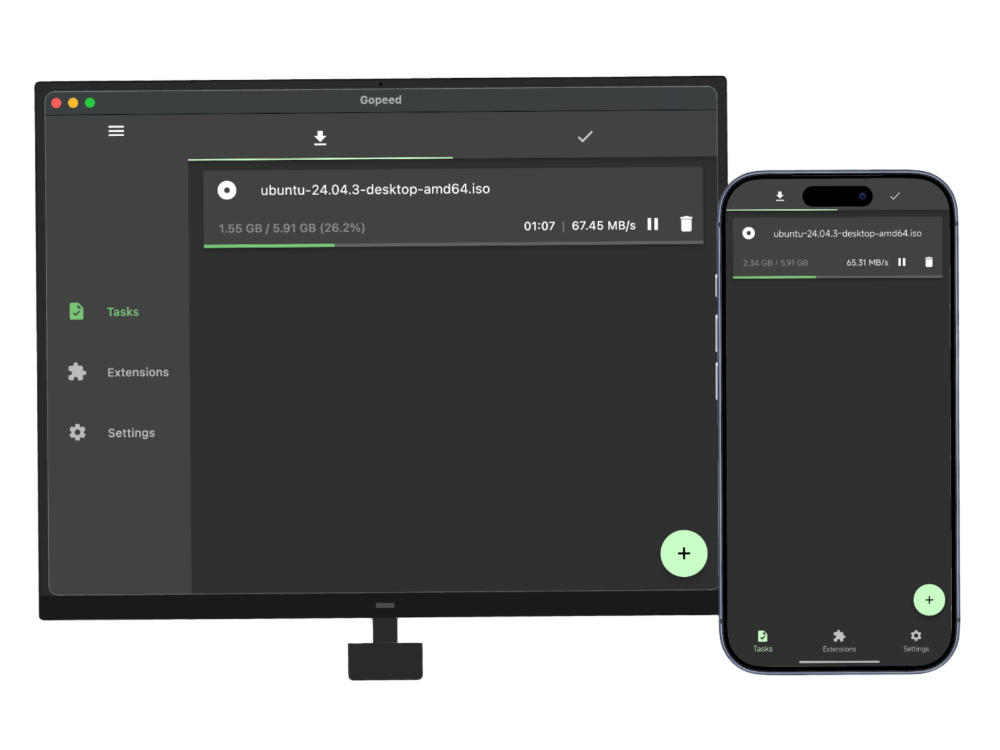

Gopeed 值不值得当主力下载器？对比了一圈同类工具后的结论
开源下载工具赛道这两年冒出了不少新面孔，Gopeed 是其中把跨平台、浏览器接管、扩展系统和 AI 接入捏得最像样的一个。用了大半年，聊聊它在同类里的位置。
下载工具这个赛道，国内用户最先想到的通常是迅雷，国际上则是 IDM、Free Download Manager 这类老牌选手。近几年开源社区也没闲着，aria2、Motrix、qBittorrent 各有拥趸，但大多数要么只做 BT、要么只做 HTTP、要么跨平台体验严重割裂。Gopeed官网 是我这两年看到的，把多协议、跨平台、浏览器接管和自动化能力同时做全的唯一一个。
它在同类里的位置
先给读者一个坐标系。今天你在找下载工具，大致分成四种需求：只下 BT 的、只下 HTTP 的、既要又要但不折腾的、既要又要还要可编程的。Gopeed 瞄准的就是最后一种——而且它没做减法，HTTP/HTTPS 多协程、BT 三件套（种子、磁力、ed2k）、DHT/PEX/uTP/WebSeed 全套底层能力一个不少。
这本身不算稀奇，Motrix 也覆盖了这些协议。但 Gopeed 真正拉开差距的，是它从一开始就把「与浏览器协作」和「被其他程序操控」当成了一级功能，而不是后补的插件。
三个别家没有的差异化点
浏览器扩展不只是取链接，而是写解析器
大多数下载工具的浏览器扩展只做一件事：右键菜单里加一个「用 XX 下载」，把直链丢给主程序。Gopeed 不一样，它的扩展系统支持用 JavaScript 写解析器——社区已经有人给特定视频站写了脚本，让原本拿不到直链的资源也能被主程序接管下载。
这件事的意义在于，它把「浏览器里的资源嗅探」从一个需要专门装插件的独立功能，整合进了下载工具的工作流。Chrome、Edge、Firefox 商店都有上架，不需要开开发者模式。

REST API + Webhook + MCP：三层自动化入口
Gopeed 的主程序暴露了完整的 RESTful API——创建任务、暂停、续传、删除，全部可以通过 HTTP 请求操控。任务完成时还能触发 Webhook 或执行自定义脚本，方便接进自己的自动化流水线（比如下载完自动转存网盘、自动重命名归档）。
2.0 测试版更进一步，直接加了 MCP 接口——AI Agent 可以通过九个工具用自然语言管理下载，具体用法去Gopeed文档翻一下就能找到。这在下载工具里我是头一回见，虽然目前还在 Beta 阶段，但方向很明确：Gopeed 想成为 AI 时代的下载基础设施，而不只是一个独立应用。
扩展靠 Git 去中心化发布，零审核
Gopeed 的扩展发布机制很有意思：编译产物推到 GitHub 或 Gitee，manifest.json 里填好仓库地址，就完事了。没有审核、没有上架流程，用户按标签检索就能发现社区扩展。更新也不靠你做任何推送动作——客户端按 semver 版本号自动拉取新版本，Git 天然就是分发渠道。
这种设计既轻量又干净，跟插件商店那种中心化审核机制完全不同，适合小而散的社区扩展生态。
为这些优势付出的代价
说了好的，也得说说不那么好的地方。
首先是杀毒软件误报。Windows 上部分杀软会标记它的 host.exe（浏览器扩展与主程序的通信组件）和 updater.exe（自动更新组件），这不是 Gopeed 一家的问题——Go 语言编译的应用普遍有这个困扰，但新来的用户看到提示难免会犹豫——安装包从官方下载拿就不用担心来源问题。官方的处理方式很务实：建议把整个安装目录加白名单，只对白单文件放行过阵子还会再报。
其次是 2.0 版本的稳定性。2.0 Beta 换了 FFI 直连架构，Flutter 界面不再走本地 HTTP 中转，理论上跨平台行为应该更一致，但毕竟还在测试期，追求极致稳定的用户暂时待在 1.9.3 稳定线更保险。官方自己也明确说了，部分功能可能不够完善。
最后，生态规模和老牌工具还有差距。IDM 那种闭源打磨了十几年的下载器，在 Windows 上的下载速度、浏览器接管体验确实更成熟。Gopeed 的优势在于开源可编程，但如果你只是想装上就用、不在乎能不能扩展，它未必是第一选择。

选购结论：什么样的人选它
如果你符合下面任意一条，Gopeed 值得当主力下载器：
- 你需要同时下 BT 和 HTTP，而且想在 Windows、macOS、Linux 上用同一个工具；
- 你想把下载接进自己的自动化流程——API、Webhook、完成脚本这些能力是硬需求；
- 你对浏览器接管有更高要求，或者愿意用社区扩展解锁特定网站的下载能力；
- 你已经在折腾 AI Agent，想试试 MCP 接入带来的新玩法。
如果你只是偶尔下几个文件、对跨平台没需求、或者完全不想碰任何配置，IDM、Motrix、甚至系统自带的下载器可能更省事。工具没有绝对的好坏，只有合不合适。
我自己大半年下来，Gopeed 已经替换掉了之前的 Motrix 和 qBittorrent——一个顶俩，还能接进自动化脚本，省心。它在同类里不是功能最多的，但在「把多协议、跨平台、可编程这三件事同时做好」这个窄赛道上，目前没有对手。作为开源项目，它的源码和文档分别托管在GitHub、Gitee和GitCode，想跟进开发或贡献扩展的可以挑一个顺手的平台。